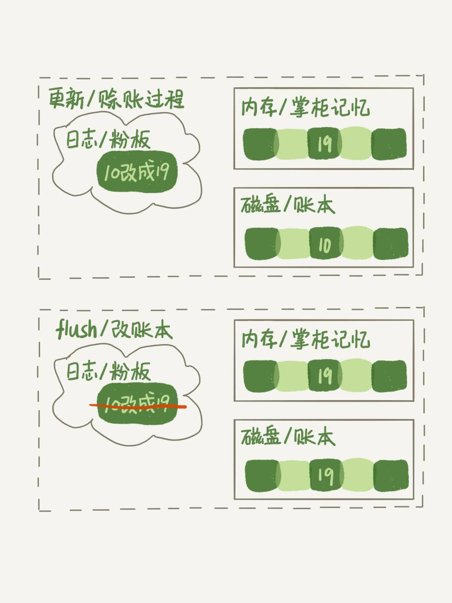
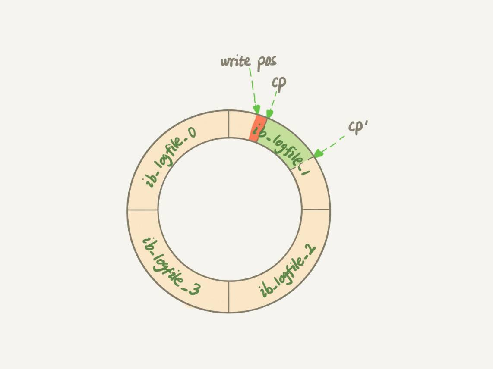
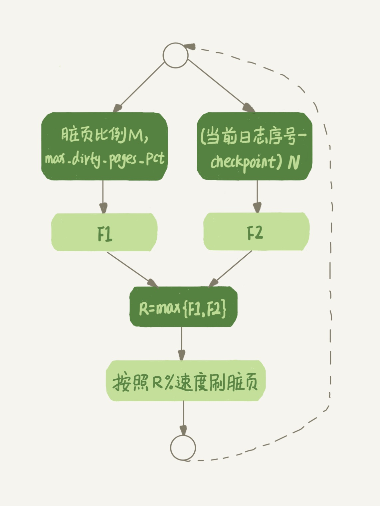

平时的工作中，不知道你有没有遇到过这样的场景，一条 SQL 语句，正常执行的时候特别快，但是有时也不知道怎么回事，它就会变得特别慢，并且这样的场景很难复现，它不只随机，而且持续时间还很短。 看上去，这就像是数据库“抖”了一下。今天，我们就一起来看一看这是什么原因。
你的 SQL 语句为什么变“慢”了
在MySQL日志系统：一条SQL更新语句是如何执行的？中，我为你介绍了 WAL 机制。现在你知道了，InnoDB 在处理更新语句的时候，只做了写日志这一个磁盘操作。这个日志叫作 redo log（重做日志），也就是《孔乙己》里咸亨酒店掌柜用来记账的粉板，在更新内存写完 redo log 后，就返回给客户端，本次更新成功。 做下类比的话，掌柜记账的账本是数据文件，记账用的粉板是日志文件（redo log），掌柜的记忆就是内存。 掌柜总要找时间把账本更新一下，这对应的就是把内存里的数据写入磁盘的过程，术语就是 flush。在这个 flush 操作执行之前，孔乙己的赊账总额，其实跟掌柜手中账本里面的记录是不一致的。因为孔乙己今天的赊账金额还只在粉板上，而账本里的记录是老的，还没把今天的赊账算进去。 当内存数据页跟磁盘数据页内容不一致的时候，我们称这个内存页为“脏页”。内存数据写入到磁盘后，内存和磁盘上的数据页的内容就一致了，称为“干净页”。 不论是脏页还是干净页，都在内存中。在这个例子里，内存对应的就是掌柜的记忆。 接下来，我们用一个示意图来展示一下“孔乙己赊账”的整个操作过程。假设原来孔乙己欠账 10 文，这次又要赊 9 文。

回到文章开头的问题，你不难想象，平时执行很快的更新操作，其实就是在写内存和日志，而 MySQL 偶尔“抖”一下的那个瞬间，可能就是在刷脏页（flush）。
### 什么情况会引发数据库的 flush 过程呢？
我们还是继续用咸亨酒店掌柜的这个例子，想一想：掌柜在什么情况下会把粉板上的赊账记录改到账本上？ 第一种场景是，粉板满了，记不下了。这时候如果再有人来赊账，掌柜就只得放下手里的活儿，将粉板上的记录擦掉一些，留出空位以便继续记账。当然在擦掉之前，他必须先将正确的账目记录到账本中才行。 这个场景，对应的就是 InnoDB 的 redo log 写满了。这时候系统会停止所有更新操作，把 checkpoint 往前推进，redo log 留出空间可以继续写。我在第二讲画了一个 redo log 的示意图，这里我改成环形，便于大家理解。

checkpoint 可不是随便往前修改一下位置就可以的。比如图 2 中，把 checkpoint 位置从 CP 推进到 CP’，就需要将两个点之间的日志（浅绿色部分），对应的所有脏页都 flush 到磁盘上。之后，图中从 write pos 到 CP’之间就是可以再写入的 redo log 的区域。 第二种场景是，这一天生意太好，要记住的事情太多，掌柜发现自己快记不住了，赶紧找出账本把孔乙己这笔账先加进去。 这种场景，对应的就是系统内存不足。当需要新的内存页，而内存不够用的时候，就要淘汰一些数据页，空出内存给别的数据页使用。如果淘汰的是“脏页”，就要先将脏页写到磁盘。 你一定会说，这时候难道不能直接把内存淘汰掉，下次需要请求的时候，从磁盘读入数据页，然后拿 redo log 出来应用不就行了？这里其实是从（读）性能考虑的。如果刷脏页一定会写盘，就保证了每个数据页有两种状态：
- 内存里存在，内存里就肯定是正确的结果，直接返回；
- 内存里没有数据，就可以肯定数据文件上是正确的结果，读入内存后返回。 这样的效率最高。 第三种场景是，生意不忙的时候，或者打烊之后。这时候柜台没事，掌柜闲着也是闲着，不如更新账本。 这种场景，对应的就是 MySQL 认为系统“空闲”的时候。当然，MySQL“这家酒店”的生意好起来可是会很快就能把粉板记满的，所以“掌柜”要合理地安排时间，即使是“生意好”的时候，也要见缝插针地找时间，只要有机会就刷一点“脏页”。 第四种场景是，年底了咸亨酒店要关门几天，需要把账结清一下。这时候掌柜要把所有账都记到账本上，这样过完年重新开张的时候，就能就着账本明确账目情况了。 这种场景，对应的就是 MySQL 正常关闭的情况。这时候，MySQL 会把内存的脏页都 flush 到磁盘上，这样下次 MySQL 启动的时候，就可以直接从磁盘上读数据，启动速度会很快。 接下来，你可以分析一下上面四种场景对性能的影响。 其中，第三种情况是属于 MySQL 空闲时的操作，这时系统没什么压力，而第四种场景是数据库本来就要关闭了。这两种情况下，你不会太关注“性能”问题。所以这里，我们主要来分析一下前两种场景下的性能问题。 第一种是“redo log 写满了，要 flush 脏页”，这种情况是 InnoDB 要尽量避免的。因为出现这种情况的时候，整个系统就不能再接受更新了，所有的更新都必须堵住。如果你从监控上看，这时候更新数会跌为 0。 第二种是“内存不够用了，要先将脏页写到磁盘”，这种情况其实是常态。InnoDB 用缓冲池（buffer pool）管理内存，缓冲池中的内存页有三种状态：
- 还没有使用的；
- 使用了并且是干净页；
- 使用了并且是脏页；
InnoDB 的策略是尽量使用内存，因此对于一个长时间运行的库来说，未被使用的页面很少。 而当要读入的数据页没有在内存的时候，就必须到缓冲池中申请一个数据页。这时候只能把最久不使用的数据页从内存中淘汰掉：如果要淘汰的是一个干净页，就直接释放出来复用；但如果是脏页呢，就必须将脏页先刷到磁盘，变成干净页后才能复用。 所以，刷脏页虽然是常态，但是出现以下这两种情况，都是会明显影响性能的：
- 一个查询要淘汰的脏页个数太多，会导致查询的响应时间明显变长；
- 日志写满，更新全部堵住，写性能跌为 0，这种情况对敏感业务来说，是不能接受的。 所以，InnoDB 需要有控制脏页比例的机制，来尽量避免上面的这两种情况。
InnoDB 刷脏页的控制策略
接下来，我就来和你说说 InnoDB 脏页的控制策略，以及和这些策略相关的参数。 首先，你要正确地告诉 InnoDB 所在主机的 IO 能力，这样 InnoDB 才能知道需要全力刷脏页的时候，可以刷多快。 这就要用到 innodb_io_capacity 这个参数了，它会告诉 InnoDB 你的磁盘能力。这个值我建议你设置成磁盘的 IOPS。磁盘的 IOPS 可以通过 fio 这个工具来测试，下面的语句是我用来测试磁盘随机读写的命令：
fio -filename=$filename -direct=1 -iodepth 1 -thread -rw=randrw -ioengine=psync -bs=16k -size=500M -numjobs=10 -runtime=10 -group_reporting -name=mytest
其实，因为没能正确地设置 innodb_io_capacity 参数，而导致的性能问题也比比皆是。之前，就有开发同学找我看一个库的性能问题，说 MySQL 的写入速度很慢，TPS 很低，但是数据库主机的 IO 压力并不大。经过一番排查，发现罪魁祸首就是这个参数的设置出了问题。 他的主机磁盘用的是 SSD，但是 innodb_io_capacity 的值设置的是 300。于是，InnoDB 认为这个系统的能力就这么差，所以刷脏页刷得特别慢，甚至比脏页生成的速度还慢，这样就造成了脏页累积，影响了查询和更新性能。 虽然我们现在已经定义了“全力刷脏页”的行为，但平时总不能一直是全力刷吧？毕竟磁盘能力不能只用来刷脏页，还需要服务用户请求。所以接下来，我们就一起看看 InnoDB 怎么控制引擎按照“全力”的百分比来刷脏页。 根据我前面提到的知识点，试想一下，如果你来设计策略控制刷脏页的速度，会参考哪些因素呢？这个问题可以这么想，如果刷太慢，会出现什么情况？首先是内存脏页太多，其次是 redo log 写满。 所以，InnoDB 的刷盘速度就是要参考这两个因素：一个是脏页比例，一个是 redo log 写盘速度。 InnoDB 会根据这两个因素先单独算出两个数字。 参数 innodb_max_dirty_pages_pct 是脏页比例上限，默认值是 75%。InnoDB 会根据当前的脏页比例（假设为 M），算出一个范围在 0 到 100 之间的数字，计算这个数字的伪代码类似这样：
F1(M)
{
if M>=innodb_max_dirty_pages_pct then
return 100;
return 100*M/innodb_max_dirty_pages_pct;
}
InnoDB 每次写入的日志都有一个序号，当前写入的序号跟 checkpoint 对应的序号之间的差值，我们假设为 N。InnoDB 会根据这个 N 算出一个范围在 0 到 100 之间的数字，这个计算公式可以记为 F2(N)。F2(N) 算法比较复杂，你只要知道 N 越大，算出来的值越大就好了。 然后，根据上述算得的 F1(M) 和 F2(N) 两个值，取其中较大的值记为 R，之后引擎就可以按照 innodb_io_capacity 定义的能力乘以 R% 来控制刷脏页的速度。 上述的计算流程比较抽象，不容易理解，所以我画了一个简单的流程图。图中的 F1、F2 就是上面我们通过脏页比例和 redo log 写入速度算出来的两个值。

现在你知道了，InnoDB 会在后台刷脏页，而刷脏页的过程是要将内存页写入磁盘。所以，无论是你的查询语句在需要内存的时候可能要求淘汰一个脏页，还是由于刷脏页的逻辑会占用 IO 资源并可能影响到了你的更新语句，都可能是造成你从业务端感知到 MySQL“抖”了一下的原因。 要尽量避免这种情况，你就要合理地设置 innodb_io_capacity 的值，并且平时要多关注脏页比例，不要让它经常接近 75%。 其中，脏页比例是通过 Innodb_buffer_pool_pages_dirty/Innodb_buffer_pool_pages_total 得到的，具体的命令参考下面的代码：
mysql> select VARIABLE_VALUE into @a from global_status where VARIABLE_NAME = 'Innodb_buffer_pool_pages_dirty';
select VARIABLE_VALUE into @b from global_status where VARIABLE_NAME = 'Innodb_buffer_pool_pages_total';
select @a/@b;
接下来，我们再看一个有趣的策略。 一旦一个查询请求需要在执行过程中先 flush 掉一个脏页时，这个查询就可能要比平时慢了。而 MySQL 中的一个机制，可能让你的查询会更慢：在准备刷一个脏页的时候，如果这个数据页旁边的数据页刚好是脏页，就会把这个“邻居”也带着一起刷掉；而且这个把“邻居”拖下水的逻辑还可以继续蔓延，也就是对于每个邻居数据页，如果跟它相邻的数据页也还是脏页的话，也会被放到一起刷。 在 InnoDB 中，innodb_flush_neighbors 参数就是用来控制这个行为的，值为 1 的时候会有上述的“连坐”机制，值为 0 时表示不找邻居（线上设置为0），自己刷自己的。 找“邻居”这个优化在机械硬盘时代是很有意义的，可以减少很多随机 IO。机械硬盘的随机 IOPS 一般只有几百，相同的逻辑操作减少随机 IO 就意味着系统性能的大幅度提升。 而如果使用的是 SSD 这类 IOPS 比较高的设备的话，我就建议你把 innodb_flush_neighbors 的值设置成 0。因为这时候 IOPS 往往不是瓶颈，而“只刷自己”，就能更快地执行完必要的刷脏页操作，减少 SQL 语句响应时间。 在 MySQL 8.0 中，innodb_flush_neighbors 参数的默认值已经是 0 了。
### 小结
今天这篇文章，延续MySQL日志系统：一条SQL更新语句是如何执行的？中介绍的 WAL 的概念，和你解释了这个机制后续需要的刷脏页操作和执行时机。 利用 WAL 技术，数据库将随机写转换成了顺序写，大大提升了数据库的性能。但是，由此也带来了内存脏页的问题。脏页会被后台线程自动 flush，也会由于数据页淘汰而触发 flush，而刷脏页的过程由于会占用资源，可能会让你的更新和查询语句的响应时间长一些。在文章里，我也给你介绍了控制刷脏页的方法和对应的监控方式。 思考：当内存不够用了，要将脏页写到磁盘，会有一个数据页淘汰机制（最久不使用），假设淘汰的是脏页，则此时脏页所对应的redo log的位置是随机的，当有多个不同的脏页需要刷，则对应的redo log可能在不同的位置，这样就需要把redo log的多个不同位置刷掉，这样对于redo log的处理不是就会很麻烦吗？ 另外，redo log的优势在于将磁盘随机写转换成了顺序写，如果需要将redo log的不同部分刷掉（刷脏页），不是就在redo log里随机读写了么？ 答案：其实由于淘汰的时候，刷脏页过程不用动redo log文件的。这个有个额外的保证，是redo log在“重放”的时候，如果一个数据页已经是刷过的，会识别出来并跳过。 文章最后，我给你留下一个思考题吧。 一个内存配置为 128GB、innodb_io_capacity 设置为 20000 的大规格实例，正常会建议你将 redo log 设置成 4 个 1GB 的文件。 但如果你在配置的时候不慎将 redo log 设置成了 1 个 100M 的文件，会发生什么情况呢？又为什么会出现这样的情况呢？ 要分业务场景来看
- 如果业务以写为主或者读写流量差不多，因为读cache相对较大，我理解会频繁出现因日志写满，更新全部堵住，写性能跌为 0的情况
- 如果以读为主，我理解redo_log本身设置小并没有明显的影响 作者答案：每次事务提交都要写 redo log，如果设置太小，很快就会被写满，也就是下面这个图的状态，这个“环”将很快被写满，write pos 一直追着 CP。